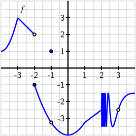
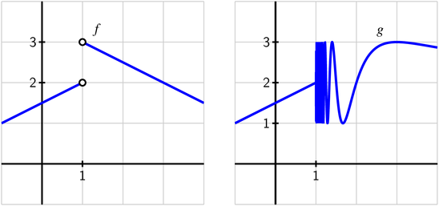
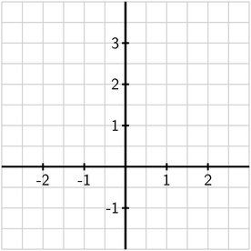
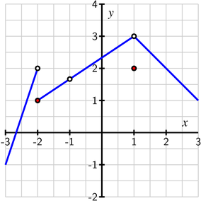
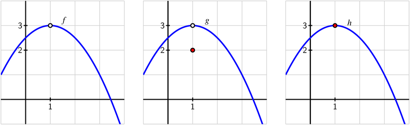
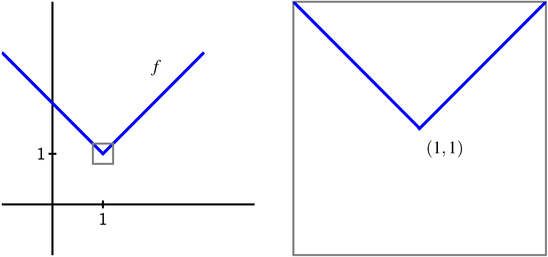
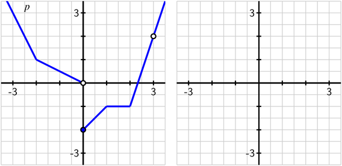
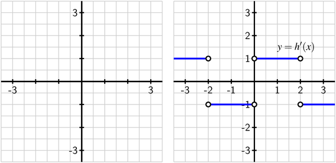

Section1.7Limits, Continuity, and Differentiability¶ permalink
{In this section, we strive to understand the ideas generated by the following important questions:
What does it mean graphically to say that \(f\) has limit \(L\) as \(x \to a\)? How is this connected to having a left-hand limit at \(x = a\) and having a right-hand limit at \(x = a\)?
What does it mean to say that a function \(f\) is continuous at \(x = a\)? What role do limits play in determining whether or not a function is continuous at a point?
What does it mean graphically to say that a function \(f\) is differentiable at \(x = a\)? How is this connected to the function being locally linear?
How are the characteristics of a function having a limit, being continuous, and being differentiable at a given point related to one another?
}
Subsection1.7.1Introduction
In Section 1.2, we learned about how the concept of limits can be used to study the trend of a function near a fixed input value. As we study such trends, we are fundamentally interested in knowing how well-behaved the function is at the given point, say \(x = a\). In this present section, we aim to expand our perspective and develop language and understanding to quantify how the function acts and how its value changes near a particular point. Beyond thinking about whether or not the function has a limit \(L\) at \(x = a\), we will also consider the value of the function \(f(a)\) and how this value is related to \(\lim_{x \to a} f(x)\), as well as whether or not the function has a derivative \(f'(a)\) at the point of interest. Throughout, we will build on and formalize ideas that we have encountered in several settings.
We begin to consider these issues through the following preview activity that asks you to consider the graph of a function with a variety of interesting behaviors.
Preview Activity
A function \(f\) defined on \(-4 \lt x \lt 4\) is given by the graph in Figure 1.7.1. Use the graph to answer each of the following questions. Note: to the right of \(x = 2\), the graph of \(f\) is exhibiting infinite oscillatory behavior similar to the function \(\sin(\frac{\pi}{x})\) that we encountered in the key example early in Section 1.2.
Figure1.7.1The graph of \(y = f(x)\).
For each of the values \(a = -3, -2, -1, 0, 1, 2, 3\), determine whether or not \(\ds \lim_{x \to a} f(x)\) exists. If the function has a limit \(L\) at a given point, state the value of the limit using the notation \(\ds \lim_{x \to a} f(x) = L\). If the function does not have a limit at a given point, write a sentence to explain why.
For each of the values of \(a\) from part (a) where \(f\) has a limit, determine the value of \(f(a)\) at each such point. In addition, for each such \(a\) value, does \(f(a)\) have the same value as \(\ds \lim_{x \to a} f(x)\)?
For each of the values \(a = -3, -2, -1, 0, 1, 2, 3\), determine whether or not \(f'(a)\) exists. In particular, based on the given graph, ask yourself if it is reasonable to say that \(f\) has a tangent line at \((a,f(a))\) for each of the given \(a\)-values. If so, visually estimate the slope of the tangent line to find the value of \(f'(a)\).
Subsection1.7.2Having a limit at a point
In Section 1.2, we first encountered limits and learned that we say that \(f\) has limit \(L\) as \(x\) approaches \(a\) and write \(\ds \lim_{x \to a} f(x) = L\) provided that we can make the value of \(f(x)\) as close to \(L\) as we like by taking \(x\) sufficiently close (but not equal to) \(a\). Here, we expand further on this definition and focus in more depth on what it means for a function not to have a limit at a given value.
Essentially there are two behaviors that a function can exhibit at a point where it fails to have a limit. In Figure 1.7.2, at left we see a function \(f\) whose graph shows a jump at \(a = 1\). In particular, if we let \(x\) approach 1 from the left side, the value of \(f\) approaches 2, while if we let \(x\) go to \(1\) from the right, the value of \(f\) tends to 3. Because the value of \(f\) does not approach a single number as \(x\) gets arbitrarily close to 1 from both sides, we know that \(f\) does not have a limit at \(a = 1\).
Since \(f\) does approach a single value on each side of \(a = 1\), we can introduce the notion of left and right (or one-sided) limits. \knownindex{\lt main>left limit\lt /main>} \knownindex{\lt main>right limit\lt /main>} \knownindex{\lt main>limit\lt /main>\lt sub>one-sided\lt /sub>} We say that \(f\) has limit \(L_1\) as \(x\) approaches \(a \) from the left and write
\[
\lim_{x \to a^-} f(x) = L_1
\]
provided that we can make the value of \(f(x)\) as close to \(L_1\) as we like by taking \(x\) sufficiently close to \(a\) while always having \(x \lt a\). In this case, we call \(L_1\) the left-hand limit of \(f\) as \(x\) approaches \(a\). Similarly, we say \(L_2\) is the right-hand limit of \(f\) as \(x\) approaches \(a\) and write
\[
\lim_{x \to a^+} f(x) = L_2
\]
provided that we can make the value of \(f(x)\) as close to \(L_2\) as we like by taking \(x\) sufficiently close to \(a\) while always having \(x > a\). In the graph of the function \(f\) in Figure 1.7.2, we see that
and precisely because the left and right limits are not equal, the overall limit of \(f\) as \(x \to 1\) fails to exist.
Figure1.7.2Functions \(f\) and \(g\) that each fail to have a limit at \(a = 1\).
For the function \(g\) pictured at right in Figure 1.7.2, the function fails to have a limit at \(a = 1\) for a different reason. While the function does not have a jump in its graph at \(a = 1\), it is still not the case that \(g\) approaches a single value as \(x\) approaches 1. In particular, due to the infinitely oscillating behavior of \(g\) to the right of \(a = 1\), we say that the right-hand limit of \(g\) as \(x \to 1^+\) does not exist, and thus
\(\ds \lim_{x \to 1} g(x) \ \mbox{does not exist} .\)
To summarize, anytime either a left- or right-hand limit fails to exist or the left- and right-hand limits are not equal to each other, the overall limit will not exist. Said differently,
{
A function \(f\) has limit \(L\) as \(x \to a\) if and only if
That is, a function has a limit at \(x = a\) if and only if both the left- and right-hand limits at \(x = a\) exist and share the same value.
}
In Preview Activity , the function \(f\) given in Figure 1.7.1 only fails to have a limit at two values: at \(a = -2\) (where the left- and right-hand limits are 2 and \(-1\), respectively) and at \(x = 2\), where \(\lim_{x \to 2^+} f(x)\) does not exist). Note well that even at values like \(a = -1\) and \(a = 0\) where there are holes in the graph, the limit still exists.
Consider a function that is piecewise-defined according to the formula
\[
f(x) = \begin{cases}3(x+2)+2 \amp \text{for -3 \lt x \lt -2} \\
\frac{2}{3}(x+2)+1 \amp \text{for -2 \le x \lt -1} \\
\frac{2}{3}(x+2)+1 \amp \text{for -1 \lt x \lt 1} \\
2 \amp \text{for x = 1} \\
4-x \amp \text{for x > 1}
\end{cases}
\]
Use the given formula to answer the following questions.
Figure1.7.4Axes for plotting the function \(y = f(x)\) in Activity 1.7.3.
For each of the values \(a = -2, -1, 0, 1, 2\), compute \(f(a)\).
For each of the values \(a = -2, -1, 0, 1, 2\), determine \(\ds \lim_{x \to a^-} f(x)\) and \(\ds \lim_{x \to a^+} f(x)\).
For each of the values \(a = -2, -1, 0, 1, 2\), determine \(\ds \lim_{x \to a} f(x)\). If the limit fails to exist, explain why by discussing the left- and right-hand limits at the relevant \(a\)-value.
For which values of \(a\) is the following statement true?
\[
\lim_{x \to a} f(x) \ne f(a)
\]
On the axes provided in Figure 1.7.4, sketch an accurate, labeled graph of \(y = f(x)\). Be sure to carefully use open circles (\(\circ\)) and filled circles (\(\bullet\)) to represent key points on the graph, as dictated by the piecewise formula.
Find the interval in which \(a\) lies and evaluate the function there.
Remember that for \(\ds \lim_{x \to a^-} f(x)\), we only consider values of \(x\) such that \(x \lt a\). Find the right formula to use in the piecewise definition for \(f\) to fit the values you are considering.
Use your work in (c) and compare left- and right-hand limits.
Find the interval in which \(a\) lies and evaluate the function there. For example, \(f(-2) = \frac{2}{3}(-2+2) + 1\), based on the formula for \(f\).
Remember that for \(\ds \lim_{x \to a^-} f(x)\), we only consider values of \(x\) such that \(x \lt a\). Find the right formula to use in the piecewise definition for \(f\) to fit the values you are considering. For example, as \(x \to -2^-\), we use the formula \(3(x+2)+2\) and see that \(3(x+2)+2 \to 3(-2+2)+2 = 2\) as \(x \to -2^+\).
Use your work in (c) and compare left- and right-hand limits. Remember that the overall limit exists if and only if both left and right limits exists and are equal in value.
Use your work in (a) and (c).
Note that \(f\) is piecewise linear. For instance, \(y = 3(x+2) + 2\) is a line through \((-2,2)\) with slope 3 and is valid on the interval \(-3 \lt x \lt -2\).
\(\ds \lim_{x \to -2} f(x)\) does not exists because the left-hand limit is \(2\) while the right-hand limit is \(1\). All of the other requested limits exist, as left- and right-hand limits exist and are equal in each case. The respective values of the limits as \(x \to a\) for \(a = -1, 0, 1, 2\) are \(\frac{5}{3}, \frac{7}{3}, 3, 2\).
For \(a = -2\), \(a = -1\), and \(a = 1\), \(\ds \lim_{x \to a} f(x) \ne f(a)\). At \(a = -2\), the limit fails to exist, but \(f(-2) = 1\). At \(a = -1\), the limit is \(\frac{5}{3}\), but \(f(-1)\) is not defined. At \(a = 1\), the limit is 3, but \(f(1) = 2\).

Subsection1.7.3Being continuous at a point
\knownindex{\lt main>continuous\lt /main>}
Intuitively, a function is continuous if we can draw it without ever lifting our pencil from the page. Alternatively, we might say that the graph of a continuous function has no jumps or holes in it. We first consider three specific situations in Figure 1.7.5 where all three functions have a limit at \(a = 1\), and then work to make the idea of continuity more precise.
Figure1.7.5Functions \(f\), \(g\), and \(h\) that demonstrate subtly different behaviors at \(a = 1\).
Note that \(f(1)\) is not defined, which leads to the resulting hole in the graph of \(f\) at \(a = 1\). We will naturally say that \(f\) is not continuous at \(a = 1\). For the next function \(g\) in in Figure 1.7.5, we observe that while \(\lim_{x \to 1} g(x) = 3\), the value of \(g(1) = 2\), and thus the limit does not equal the function value. Here, too, we will say that \(g\) is not continuous, even though the function is defined at \(a = 1\). Finally, the function \(h\) appears to be the most well-behaved of all three, since at \(a = 1\) its limit and its function value agree. That is,
\[
\lim_{x \to 1} h(x) = 3 = h(1).
\]
With no hole or jump in the graph of \(h\) at \(a = 1\), we desire to say that \(h\) is continuous there.
More formally, we make the following definition.
Definition1.7.6
A function \(f\) is continuous at \(x = a\) \knownindex{\lt main>continuous at \(x = a\)\lt /main>} provided that
\(f\) has a limit as \(x \to a\),
\(f\) is defined at \(x = a\), and
\(\ds \lim_{x \to a} f(x) = f(a).\)
Conditions (a) and (b) are technically contained implicitly in (c), but we state them explicitly to emphasize their individual importance. In words, (c) essentially says that a function is continuous at \(x = a\) provided that its limit as \(x \to a\) exists and equals its function value at \(x = a\). If a function is continuous at every point in an interval \([a,b]\), we say the function is “continuous on \([a,b]\).” If a function is continuous at every point in its domain, we simply say the function is “continuous.” Thus, continuous functions are particularly nice: to evaluate the limit of a continuous function at a point, all we need to do is evaluate the function.
For example, consider \(p(x) = x^2 - 2x + 3\). It can be proved that every polynomial is a continuous function at every real number, and thus if we would like to know \(\lim_{x \to 2} p(x)\), we simply compute
This route of substituting an input value to evaluate a limit works anytime we know function being considered is continuous. Besides polynomial functions, all exponential functions and the sine and cosine functions are continuous at every point, as are many other familiar functions and combinations thereof.
This activity builds on your work in Preview Activity , using the same function \(f\) as given by the graph that is repeated in Figure 1.7.8
Figure1.7.8The graph of \(y = f(x)\) for Activity 1.7.7.
At which values of \(a\) does \(\lim_{x \to a} f(x)\) not exist?
At which values of \(a\) is \(f(a)\) not defined?
At which values of \(a\) does \(f\) have a limit, but \(\lim_{x \to a} f(x) \ne f(a)\)?
State all values of \(a\) for which \(f\) is not continuous at \(x = a\).
Which condition is stronger, and hence implies the other: \(f\) has a limit at \(x = a\) or \(f\) is continuous at \(x = a\)? Explain, and hence complete the following sentence: “If \(f\) at \(x = a\), then \(f\) at \(x = a\),” where you complete the blanks with has a limit and is continuous, using each phrase once.
Consider the left- and right-hand limits at each value.
Carefully examine places on the graph where there's an open circle.
Are there locations on the graph where the function has a limit but there's a hole in the graph?
Remember that at least one of three conditions must fail: if the function lacks a limit, if the function is undefined, or if the limit exists but does not equal the function value, then \(f\) is not continuous at the point.
Note that the definition of being continuous requires the limit to exist.
Consider the left- and right-hand limits at each value, and recall that they must both exist and be equal in order for the overall limit to exist.
Carefully examine places on the graph where there's an open circle; at such locations, look vertically to see if the function has an assigned value at that point.
Are there locations on the graph where the function has a limit but there's a hole in the graph?
Remember that at least one of three conditions must fail: if the function lacks a limit, if the function is undefined, or if the limit exists but does not equal the function value, then \(f\) is not continuous at the point.
Note that the definition of being continuous requires the limit to exist.
\(\lim_{x \to a} f(x)\) does not exist at \(a = -2\) since \(\lim_{x \to -2^-} f(x) = 2 \ne -1 = \lim_{x \to -2^+}\) and \(\lim_{x \to a} f(x)\) does not exist at \(a = +2\) since \(\lim_{x \to 2^+} f(x)\) does not exist due to the infinitely oscillatory behavior of \(f\).
The only point at which \(f\) is not defined is at \(a = 3\).
At \(x = -1\), note that \(\lim_{x \to -1} f(x)\) exists (and appears to have value approximately \(-3.25\)), but \(f(-1) = 1\), and thus \(\lim_{x \to -1} f(x) \ne f(-1)\). At \(x = 3\), \(\lim_{x \to 3} f(x) = -2.5\), but \(f(3)\) is not defined, so the limit exists but does not equal the function value.
Based on our work in (a), (b), and (c), \(f\) is not continuous at \(a=-2\) and \(a = 2\) because \(f\) does not have a limit at those points; \(f\) is not continuous at \(a = 3\) since \(f\) is not defined there; and \(f\) is not continuous at \(a = -1\) because at that point its limit does not equal its function value.
“If \(f\) is continuous at \(x = a\), then \(f\) has a limit at \(x = a\),” since one of the defining properties of “being continuous” at \(x = a\) is that the function has a limit at that input value. This shows that being continuous is a stronger condition than having a limit.
Subsection1.7.4Being differentiable at a point
\knownindex{\lt main>differentiable\lt /main>}
We recall that a function \(f\) is said to be differentiable at \(x = a\) whenever \(f'(a)\) exists. Moreover, for \(f'(a)\) to exist, we know that the function \(y = f(x)\) must have a tangent line at the point \((a,f(a))\), since \(f'(a)\) is precisely the slope of this line. In order to even ask if \(f\) has a tangent line at \((a,f(a))\), it is necessary that \(f\) be continuous at \(x = a\): if \(f\) fails to have a limit at \(x = a\), if \(f(a)\) is not defined, or if \(f(a)\) does not equal the value of \(\lim_{x \to a} f(x)\), then it doesn't even make sense to talk about a tangent line to the curve at this point.
Indeed, it can be proved formally that if a function \(f\) is differentiable at \(x = a\), then it must be continuous at \(x = a\). So, if \(f\) is not continuous at \(x = a\), then it is automatically the case that \(f\) is not differentiable there. For example, in Figure 1.7.5 from our early discussion of continuity, both \(f\) and \(g\) fail to be differentiable at \(x = 1\) because neither function is continuous at \(x = 1\). But can a function fail to be differentiable at a point where the function is continuous?
In Figure 1.7.9, we revisit the situation where a function has a sharp corner at a point, something we encountered several times in Section 1.4. For the pictured function \(f\), we observe that \(f\) is clearly continuous at \(a = 1\), since \(\lim_{x \to 1} f(x) = 1 = f(1).\)
Figure1.7.9A function \(f\) that is continuous at \(a = 1\) but not differentiable at \(a = 1\); at right, we zoom in on the point \((1,1)\) in a magnified version of the box in the left-hand plot.
But the function \(f\) in Figure 1.7.9 is not differentiable at \(a = 1\) because \(f'(1)\) fails to exist. One way to see this is to observe that \(f'(x) = -1\) for every value of \(x\) that is less than 1, while \(f'(x) = +1\) for every value of \(x\) that is greater than 1. That makes it seem that either \(+1\) or \(-1\) would be equally good candidates for the value of the derivative at \(x = 1\). Alternately, we could use the limit definition of the derivative to attempt to compute \(f'(1)\), and discover that the derivative does not exist. A similar problem will be investigated in Activity 1.7.10. Finally, we can also see visually that the function \(f\) in Figure 1.7.9 does not have a tangent line. When we zoom in on \((1,1)\) on the graph of \(f\), no matter how closely we examine the function, it will always look like a “V”, and never like a single line, which tells us there is no possibility for a tangent line there.
To make a more general observation, if a function does have a tangent line at a given point, when we zoom in on the point of tangency, the function and the tangent line should appear essentially indistinguishable 1 See, for instance, \href{http://gvsu.edu/s/6J}{http://gvsu.edu/s/6J} for an applet (due to David Austin, GVSU) where zooming in shows the increasing similarity between the tangent line and the curve.. Conversely, if we have a function such that when we zoom in on a point the function looks like a single straight line, then the function should have a tangent line there, and thus be differentiable. Hence, a function that is differentiable at \(x = a\) will, up close, look more and more like its tangent line at \((a,f(a))\), and thus we say that a function is differentiable at \(x = a\) is locally linear. \knownindex{\lt main>locally linear\lt /main>}
To summarize the preceding discussion of differentiability and continuity, we make several important observations.
If \(f\) is differentiable at \(x = a\), then \(f\) is continuous at \(x = a\). Equivalently, if\(f\) fails to be continuous at \(x = a\), then \(f\) will not be differentiable at \(x = a\).
A function can be continuous at a point, but not be differentiable there. In particular, a function \(f\) is not differentiable at \(x = a\) if the graph has a sharp corner (or cusp) \knownindex{\lt main>cusp\lt /main>} at the point \((a,f(a))\).
If \(f\) is differentiable at \(x = a\), then \(f\) is locally linear at \(x = a\). That is, when a function is differentiable, it looks linear when viewed up close because it resembles its tangent line there.
In this activity, we explore two different functions and classify the points at which each is not differentiable. Let \(g\) be the function given by the rule \(g(x) = |x|\), and let \(f\) be the function that we have previously explored in Preview Activity , whose graph is given again in Figure 1.7.11.
Reasoning visually, explain why \(g\) is differentiable at every point \(x\) such that \(x \ne 0\).
Use the limit definition of the derivative to show that \(g'(0) = \lim_{h \to 0} \frac{|h|}{h}.\)
Explain why \(g'(0)\) fails to exist by using small positive and negative values of \(h\).
Figure1.7.11The graph of \(y = f(x)\) for Activity 1.7.10.
State all values of \(a\) for which \(f\) is not differentiable at \(x = a\). For each, provide a reason for your conclusion.
True or false: if a function \(p\) is differentiable at \(x = b\), then \(\lim_{x \to b} p(x)\) must exist. Why?
We know that \(g(x) = |x|\) is given by the formula \(g(x) = -x\) when \(x \lt 0\) and by \(g(x) = x\) when \(x \ge 0\). Each of these pieces of \(g\) is a straight line, so at every point other than the point where they meet, the function \(g\) has a well-defined slope, and thus is differentiable.
Following up on our work in (b), note that whenever \(h > 0\), \(|h| = h\), and thus
\[
\lim_{h \to 0^+} \frac{|h|}{h} = \lim_{h \to 0^+} \frac{h}{h} = 1,
\]
while whenever \(h \lt 0\), \(|h| = -h\), and thus
\[
\lim_{h \to 0^-} \frac{|h|}{h} = \lim_{h \to 0^-} \frac{-h}{h} = -1
\]
Since the right- and left-hand limits are not equal, it follows that
\[
g'(0) = \lim_{h \to 0} \frac{|h|}{h}
\]
does not exist.
\(f\) is not differentiable at \(a = -2, -1, 2, 3\) because at each of these points \(f\) is not continuous. In addition, \(f\) is not differentiable at \(a = -3\) and \(a = 1\) because the graph of \(f\) has a corner point (or cusp) at each of these values.
True: if a function \(p\) is differentiable at \(x = b\), then \(\lim_{x \to b} p(x)\) must exist. This is true because we know that if \(p\) is differentiable at a point, then \(p\) is continuous there, and anytime a function is continuous at a point, it must have a limit there.
\begin{authornote}
This is an author note.
\end{authornote}
\item A function \(f\) has limit \(L\) as \(x \to a\) if and only if \(f\) has a left-hand limit at \(x = a\), has a right-hand limit at \(x = a\), and the left- and right-hand limits are equal. Visually, this means that there can be a hole in the graph at \(x = a\), but the function must approach the same single value from either side of \(x = a\).
\item A function \(f\) is continuous at \(x = a\) whenever \(f(a)\) is defined, \(f\) has a limit as \(x \to a\), and the value of the limit and the value of the function agree. This guarantees that there is not a hole or jump in the graph of \(f\) at \(x = a\).
\item A function \(f\) is differentiable at \(x = a\) whenever \(f'(a)\) exists, which means that \(f\) has a tangent line at \((a,f(a))\) and thus \(f\) is locally linear at the value \(x = a\). Informally, this means that the function looks like a line when viewed up close at \((a,f(a))\) and that there is not a corner point or cusp at \((a,f(a))\).
\item Of the three conditions discussed in this section (having a limit at \(x = a\), being continuous at \(x = a\), and being differentiable at \(x = a\)), the strongest condition is being differentiable, and the next strongest is being continuous. In particular, if \(f\) is differentiable at \(x = a\), then \(f\) is also continuous at \(x = a\), and if \(f\) is continuous at \(x = a\), then \(f\) has a limit at \(x = a\).
\hrulefill
\begin{exercises}
\item Consider the graph of the function \(y = p(x)\) that is provided in Figure 1.7.12. Assume that each portion of the graph of \(p\) is a straight line, as pictured.
Figure1.7.12At left, the piecewise linear function \(y = p(x)\). At right, axes for plotting \(y = p'(x)\).
State all values of \(a\) for which \(\lim_{x \to a} p(x)\) does not exist.
State all values of \(a\) for which \(p\) is not continuous at \(a\).
State all values of \(a\) for which \(p\) is not differentiable at \(x = a\).
On the axes provided in Figure 1.7.12, sketch an accurate graph of \(y = p'(x)\).
\item For each of the following prompts, give an example of a function that satisfies the stated criteria. A formula or a graph, with reasoning, is sufficient for each. If no such example is possible, explain why.
A function \(f\) that is continuous at \(a = 2\) but not differentiable at \(a = 2\).
A function \(g\) that is differentiable at \(a = 3\) but does not have a limit at \(a=3\).
A function \(h\) that has a limit at \(a = -2\), is defined at \(a = -2\), but is not continuous at \(a = -2\).
A function \(p\) that satisfies all of the following:
\(p(-1) = 3\) and \(\lim_{x \to -1} p(x) = 2\)
\(p(0) = 1\) and \(p'(0) = 0\)
\(\lim_{x \to 1} p(x) = p(1)\) and \(p'(1)\) does not exist
\item Let \(h(x)\) be a function whose derivative \(y= h'(x)\) is given by the graph on the right in Figure 1.7.13.
Based on the graph of \(y = h'(x)\), what can you say about the behavior of the function \(y = h(x)\)?
At which values of \(x\) is \(y = h'(x)\) not defined? What behavior does this lead you to expect to see in the graph of \(y=h(x)\)?
Is it possible for \(y = h(x)\) to have points where \(h\) is not continuous? Explain your answer.
On the axes provided at left, sketch at least two distinct graphs that are possible functions \(y = h(x)\) that each have a derivative \(y = h'(x)\) that matches the provided graph at right. Explain why there are multiple possibilities for \(y = h(x)\).
Figure1.7.13Axes for plotting \(y = h(x)\) and, at right, the graph of \(y = h'(x)\).
\item Consider the function \(g(x) = \sqrt{|x|}\).
Use a graph to explain visually why \(g\) is not differentiable at \(x = 0\).
Use the limit definition of the derivative to show that
\[
g'(0) = \lim_{h \to 0} \frac{\sqrt{|h|}}{h}.
\]
Investigate the value of \(g'(0)\) by estimating the limit in (b) using small positive and negative values of \(h\). For instance, you might compute \(\frac{\sqrt{|-0.01|}}{0.01}\). Be sure to use several different values of \(h\) (both positive and negative), including ones closer to 0 than 0.01. What do your results tell you about \(g'(0)\)?
Use your graph in (a) to sketch an approximate graph of \(y = g'(x)\).